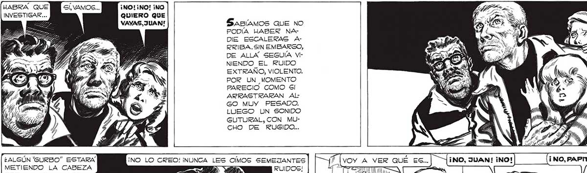
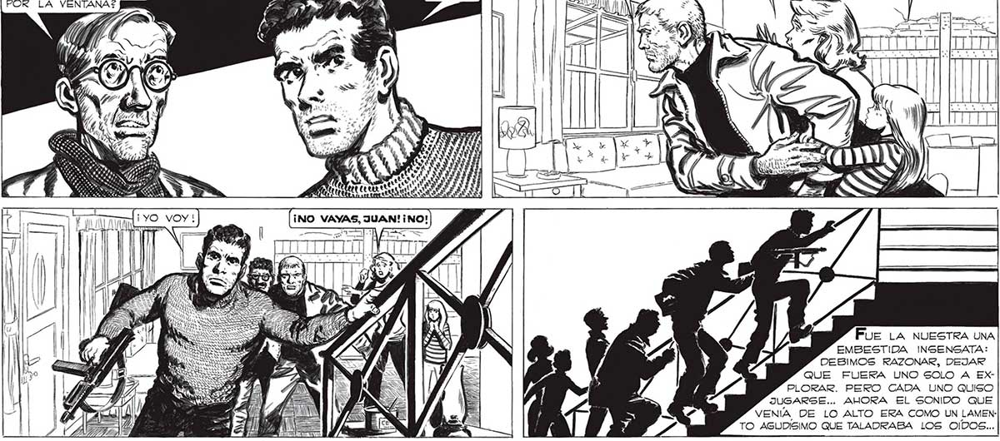

314 [uABRÁA QUE ¡NO! ¡NO! ¡NO INVESTIGAR... QUIERO QUE E VAYAS, JUAN! SABÍAMOS QUE NO PODÍA HABER NA DIE ESCALERAS ARRIBA.SIN EMBARGO, DE ALLA SEGUIA VINIENDO EL RUIDO EXTRAÑO, VIOLENTO. POR UN MOMENTO PARECIO COMO GI ARRASTRARAN ALGO MUY PESADO. LUEGO UN SONIDO GUTURAL, CON MUCHO DE RUGIDO... , ¿ALGÚN 'GURBO” ESTARÁ 7 7 e . VOY A Y SS NO, JUAN! ¡NO! NO, PA! ! METIENDO LA CABEZA Sr ! nia ] = Ss ES ¡NO, JUAN! INO!] (¡NO,PAPITO,NO! qe) PIT Mi E: A e CA ARROS Fue LA NUESTRA UNA EMBESTIDA INSENSATA: DEBIMOS RAZONAR, DEJAR QUE FUERA UNO SOLO A EXPLORAR. PERO CADA UNO QUISO JUGARSE... AHORA EL SONIDO QUE VENÍA DE LO ALTO ERA COMO UN LAMENTO AGUDÍSIMO QUE TALADRABA LOS OÍDOS...

